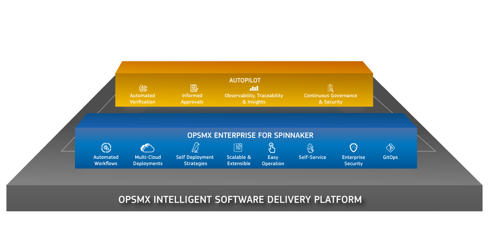

OpsMx Intelligent Software Delivery Platform
OpsMx ISD
OpsMx’s ISD is designed to help release software faster, with fewer errors and with minimal human intervention to create a better end customer experience and free up time and Manpower for businesses to scale and Innovate. ISD allows you to do the following:
- Build Flexible deployment pipelines for multiple cloud environments
- Increase compliance and communication across your development and operations teams
- Automate key stages of pipelines
- Make more informed decisions
Build Flexible deployment pipelines for multiple cloud environments:
Using ISD’s Orchestration Module, OpsMx builds off of Spinnaker, the premier open source multi cloud deployment solution, by providing users with extra layers of data and information to make better decisions. For example, Spinnaker does not have clear distinctions between the application and the various services and microservices that make up that application. ISD however allows users to easily see the various services and microservices that make up each application and the pipelines that make up each individual service and microservice. This allows you to easier see dependencies between service pipelines and as a result help you optimize your workflow. Whether used as an On-prem or a Managed SaaS solution, the orchestration module offers a host of other features like:
-
Self Service onboarding: ISD allows users to serve themselves whether it is adding a new tool, cluster or pipeline, ISD allows users to serve themselves.
-
Pipelines as code: While Spinnaker gives users visual representations of your pipelines so that you can see how your deployment stages might playout, ISD allows you to maintain your pipelines as JSON files which allows you to easily store them as, modify them and repurpose them using any Git-based repository, saving your team time and your business money.
- Infrastructure as code: As customers demand more from their CI/CD tools, the infrastructure has to be able to scale to meet those requirements. ISD allows you to use tools like Terraform to have your infrastructure like Servers available as code. This allows you to easily scale your application and, as a result, your business without having to worry as much about infrastructure costs. 
Increase compliance and communication across your development and operations teams:
Using our Pluggable data layer, ISD supports over 40+ integrations with various tools that cover each and every stage of software development and operation no matter your team size or work flow. It supports communication with tools like Slack, the Google communication suite, git based repositories like github and Bit-Bucket, automation tools like Jenkins, ticketing systems like Jira and so many others. By galvanizing these tools through one cohesive UI, ISD improves visibility for the entire team and allows each individual member to know the health of their application.
In addition to this, ISD offers a scalable policy enforcement system by using the Open Policy engine allowing for greater enforcement of organizational policies at larger scales.
Automate key stages of pipelines:
Integrating tools is just the beginning. Using OpsMx’s Data and Intelligence module, you can use artificial intelligence to make optimal decisions without relying on human intervention. For example if you are performing a log analysis, comparing the old version of the software and new versions of a software, the artificial intelligence will automatically calculate the risk of the deployment and decide whether to deploy or not all without needing a human to intervene in the process.
Make more informed decisions:
As the saying goes, “What gets measured gets managed.” ISD provides users key insights into their application health including data such as the fastest pipeline, the slowest pipeline, any errors encountered. This enables a more centralized and detailed view of your application health. In addition to this, when manual decisions are required ISD automatically gathers information from relevant sources so that the user making the decision does not need to look for that information and can make a faster decision. Whether you use Argo or another CD platform, the Data and Intelligence module AKA, Autopilot, is available stand alone.